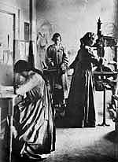

 The Dun Emer press-room, 1903
Joy Be With Us hand-colored initial by Elizabeth Corbet Yeats
Princeton University Library, Graphic Arts Collection Rebecca W. Davidson, Curator of Graphic Arts (2000-2004) rbsc@princeton.edu Tel: (609) 258-3197 Last Modified: September 14, 2009
![Book of Hawking, Hunting, and Heraldry [Book of St. Albans]](collection/thumbnails/F3DSC_0014.jpg)